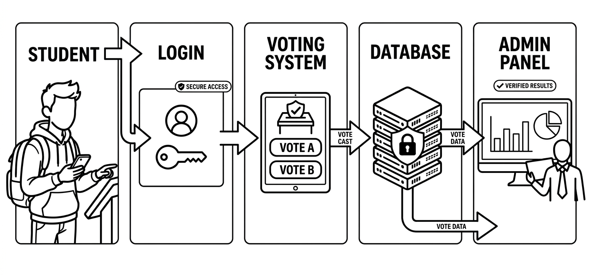
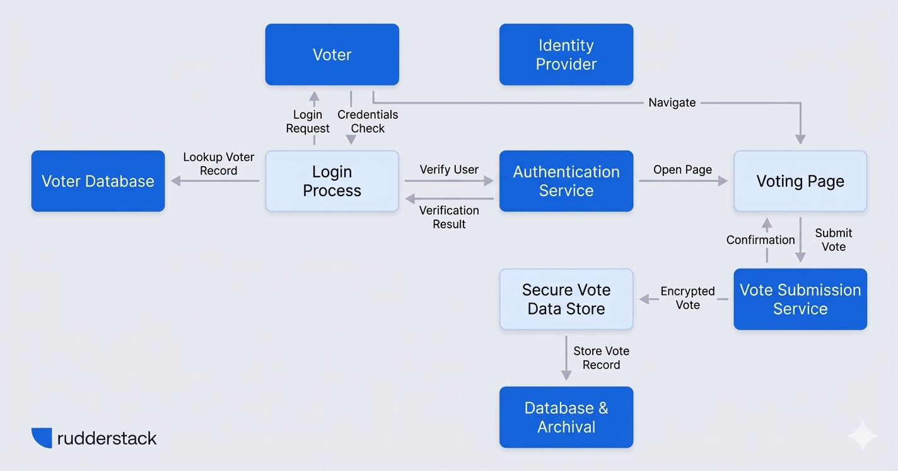
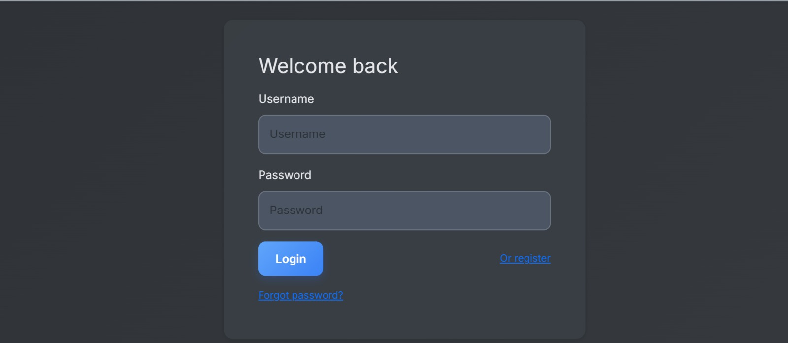
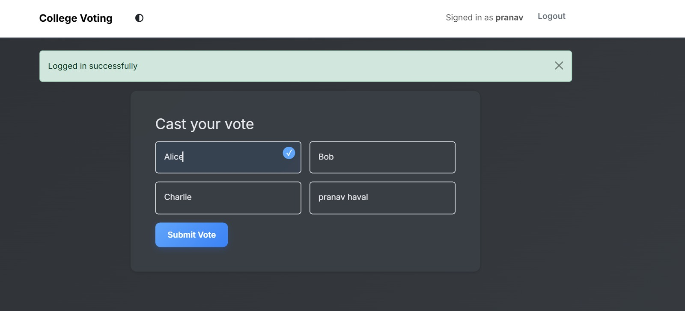
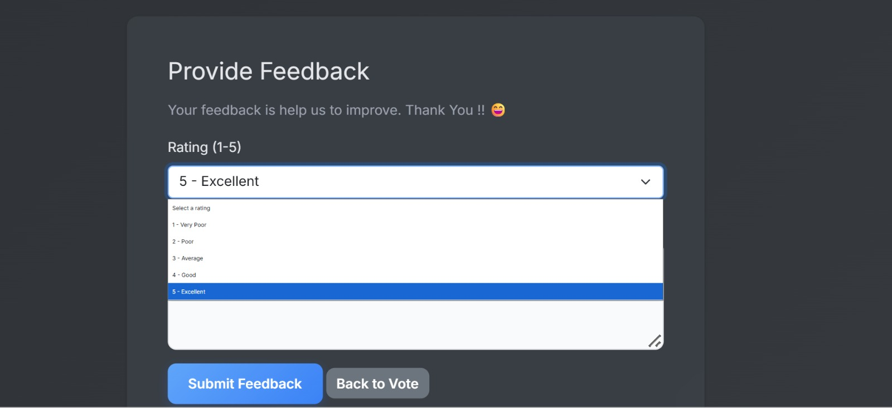
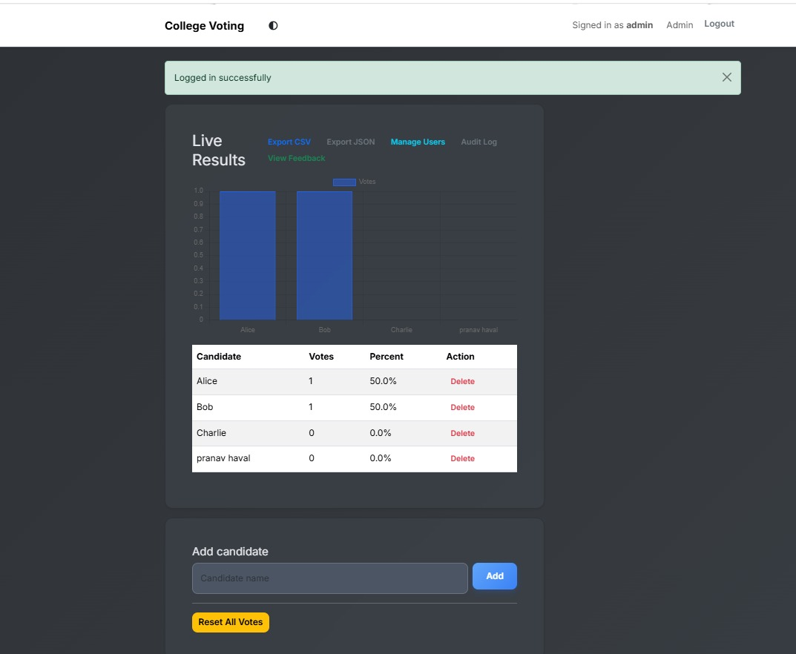
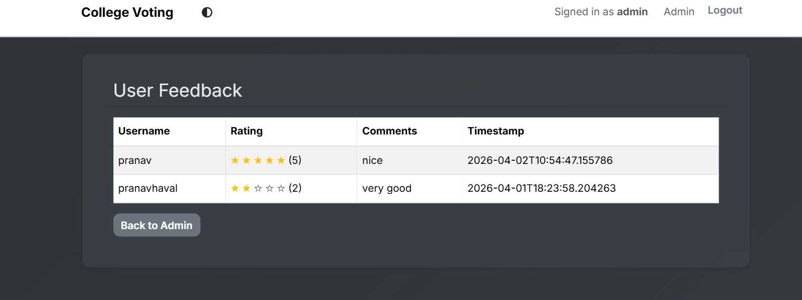

Institute: Dr. D.Y. Patil Polytechnic, Kolhapur
Developed By:
Guide: S.S. Jadhav
Department: Computer Engineering
The proposed system is an online voting platform designed to provide a secure, efficient, and transparent method for conducting college elections. It eliminates the limitations of the manual system and ensures accurate and fast result generation.

Feedback Page

Feedback Page
Allows students to log in, view candidates, and cast their vote securely.
Enables the administrator to manage candidates, monitor voting activities, and view results.
Verifies user identity using login credentials to ensure that only authorized users can access the system.
Stores student details, candidate information, and voting data securely.
HTML, CSS, JavaScript
Python
Flask
SQLite
Render
The frontend is used to design the user interface, while the backend handles application logic. Flask is used to connect the frontend with the database, and SQLite is used to store voting data securely.
The system provides an easy-to-use interface for students to log in, cast their vote, and view results. The admin can also monitor the voting process and generate reports.

Login Page

Voting Page

Rating Page

Result Page

Feedback Page
The College Voting System provides a secure, efficient, and transparent method for conducting elections.
It eliminates the limitations of the traditional paper-based system by reducing manual effort, minimizing errors, and ensuring accurate results.
The system is user-friendly and ensures that each vote is counted fairly and securely.